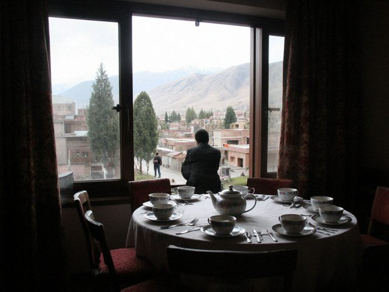

A new thing: small tois. 80 guests, a restaurant room, no band, a playlist and a laptop. They ask me: can you do it in one hour? I say, I need three, because jokes need breathing.
The couple said: we want to remember it, not to survive it. I liked that. I spent three hours and the bride's grandmother said "finally a toi where I can hear what is said."

A small toi, table for 12. Tea, not vodka.The groom's car broke down on the bridge. The bride arrived at the hall on the horse with the groom's kin and no groom. Four hundred people looked at the door. I did nine minutes of programme without a groom, which I think is a world record, and a game called "who knows him best". Nine people answered wrong.
He arrived on the back of a motorcycle in a wrinkled white shirt, and the hall roared as if he had come on a lion. It was the best entrance of the season. I will never advise it.
The bride's brother is in Moscow and could not come. So we had him at the table on a phone, held by a little cousin, who had to hold it up for two hours. He gave his toast through the phone speaker; the old women answered it with "amen!" The little cousin was so proud that she held the phone to everyone's face so they could say something.
Later the brother asked, through the phone, "who is that uncle dancing?" It was his father.
Morning at the cathedral in Iyık Janyl, the crowning (burakha). I was a guest. The priest read, the couple wore garlands, the groom's mother put the white elechek on the bride, and they shared the cup of wine. The bride cried before anything started. The groom smiled at the wrong moment, as always.
After, the lunch for the family. Then the toi in Talas at six. A long road in between and the bride's grandmother asleep in my car. I took the long way to let her sleep.
 Garlands on the church bench, 10.40, before the guests came.
Garlands on the church bench, 10.40, before the guests came.The guest gives an envelope at the toi, and somebody (an aunt, a cousin) writes it in a notebook: who gave how much. This is salym. When their turn comes, the family gives back the same or a bit more. The hall is paid by the notebook, in a way.
Last night I saw the book. 387 lines. Average 60 som, from the neighbour who works at the bakery 20, from the groom's uncle in Almaty 200 dollars. A page of a life. If you lose the book you lose your friends, my grandmother used to say.